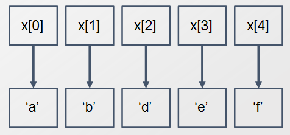
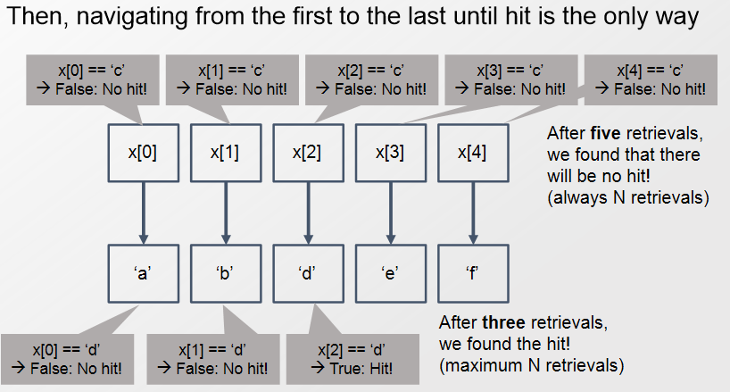
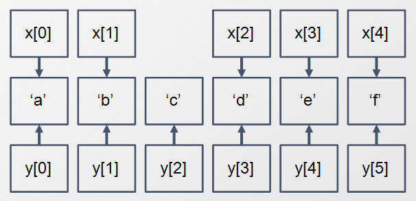

Abstract Data Types
- 일반적으로
abstraction(추상화)라는 용어는 대상의 느낌,형태와 같은내재되어있는 모습에 대한간단한표현. - Abstract Data type(ADT)이란?
- Data structure가 어떻게 돌아가는지에 대해 간단히,추상적으로 표현한 것.
- ADT는 다음과 같은 것들을 기술함
- 어떤 데이터가 저장되는가?(어떤 데이터가 있어?)
- 저장된 데이터는 어떤 연산이 가능한 것인가?(데이터로 뭘 계산할 수 있어?)
- 연산에서 나올 수 있는 에러조건은 어떻게 되는가?(계산에서 어떤 오류가 나올 수 있어?)
- Stock trading system
- buy,sell에 대한 order가 저장된다.
- 지원되는 연산들
- order buy(stock,shares,price)
- order sell(storck,shares,price)
- void cancel(order)
- Error conditions:
- 존재하지 않는 stock에 대한 buy,sell
- 존재하지 않는 order를 취소
Array

일반적으로 프로그래밍 언에서 Array란?
- 각 element가 index를 통해 접근할 수 있음.
- 각 element는 동일한 데이터를 가지고 있음.
- 인덱스는 0이거나 양수
- 파이썬에서는 리스트로 구현
Search
Array x에서 d와 c를 찾는다고 해보자.

대략적인 과정은 다음과 같을 것이다.
- 처음부터 끝에 있는 모든 요소를 하나하나씩 접근한다.
dorc를 만나면 종료한다.dorc가 포함되어있지 않다면? \(\to\) N(리스트의 길이)번의 retrievals가 필요dorc가 포함되어 있다면? \(\to\) 최대 N번의 retrievals가 필요
- retrieval은 연산(operation)으로 일단 이해하자.(자세하게 뭔지는 모르겠다.)
- 대략 몇 번정도의 연산이 일어나는지를 의미한다.
Insert
Array x의 원소인 b와 d사이에 c를 넣으려면 어떻게 해야할까?

대략적인 과정은?
- 새로운 리스트 y를 만든다.
- 기존리스트보다 길이가 1만큼 더 길다
- x[0:a-1]까지 y[0:a-1]에 있는 reference를 복사한다. (retrieval cnt : a)
- a는 b와 d사이의 index를 의미한다.
- 0:a-1까지 y가 x의 reference를 복사했으므로 같은 object를 가리키고 있다.
- 리스트는 객체에 대한 reference를 가리키고 있는 구조임을 유의하자.
- c의 레퍼런스를 y[a]에 넣는다. (retrieval cnt : 1)
- 나머지 원소 d,e,f에 대한 래퍼런스를 복사한다. 즉 x[a:]를 y[a+1:]에 복사한다.
- 마지막에 x의 reference를 y의 reference로 바꾼다.(우리는 x에 넣는 것을 원했다.)
- 총 n번의 retrievals가 필요하다.